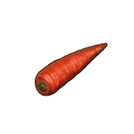
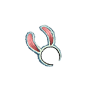
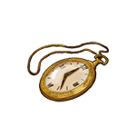

Получено: файл; исходный URL. Оригинальные байты, полученные по ссылке; идентичность архиву не подтверждена.

Коллекция Белого кролика
ВКонтакте; дата источника не указана- Тип
- Коллекции
- Версия и дата
- ВКонтакте; дата источника не указана
Элементы коллекции










Данные по источнику · ВКонтакте · дата источника не указана
Предварительно: один источник; требует сверки. Требуется сверка.
- Награда
- Трансформатор и 200 опыта
- Где копать
- Снеговик, ёлка, пирамида Майя, бригада, чучело Санты, дерево и филин
- Состав (источник Zombie-island)
- Морковка; Ушки; Цилиндр; Хвостик; Часы Кролика.
- Награда (источник Zombie-island)
- 1 Трансформатор; 200 Опыт.
- Где копать Коллекцию Белого кролика в Зомби Ферме лопатами
- Бригада; Ёлка; Снеговик; Пирамида Майя; Флаг Казахстана; Флаг Германии; Дерево и филин; Скамейка раз; Скамейка два; Фонарь два.
- Коллекция Белого кролика выпадает из кладов, ценностей, сокровищ и сундуков
- Секретный клад; Сундук Чудовища; Сюрприз; Пернатый подарок; Шишка; Простое; Коллекционер; Коллекционная посылка; Коллекционный; Новогодняя елка; Цирковой шатер; Новогодняя елка за дубл; Новогодняя елка за зб; Праздничный презент; Скромный презент; Смелый презент; Богатырский презент.
- Коллекцию Белого кролика можно наколдовать Палочками дома
- Палочка выручалочка; Черный мрамор; Белый мрамор; Зеленый мрамор; Букет; Папоротник.
- Коллекция Белого кролика попадается на Пиратских островах игры
- Пиратский сундук.
Данные по источнику · браузерная версия; платформа не указана · дата редакции не установлена
Предварительно: Содержимое списка: изображения и колонки могут терять смысл при извлечении текста; отдельная страница и дата не проверены. Подписи alt иногда ошибочны.. Требуется сверка.
- Текст карточки из каталога
- Трансформатор и 200 опыта Морковка Ушки Цилиндр Хвостик Часы кролика Где копать: Ёлка, Снеговик, Бригада, Бригада Элвиса, Фонтан, Часовня, Рука терминатора в другом месте
Данные по источнику · Мой Мир (Mail.ru); историческая таблица · дата редакции не установлена
Предварительно: Источник сам использует знаки вопроса; не следует считать такие места подтверждёнными. Возможны изменения патча и платформы; независимость от других справочников не доказана.. Требуется сверка.
- Название в источнике
- Коллекция белого кролика
- Где копать
- Снеговик, Ёлка, Бригада, Чучело Санты, Дерево и филин
- Награда
- Трансформатор и 200 опыта
Данные по источнику · браузерная версия; на сайте указана игра ВКонтакте · дата редакции не установлена
Предварительно: Исторический текст; сильно совпадает со справкой Zommbie.at.ua, независимость не доказана. Отрицания и доступность могут измениться с патчем.. Требуется сверка.
- Где искать по странице «Зомбастики»
- Ёлка, снеговик, бригада.
Данные по источнику · браузерная игра, платформа не указана · 15.04.2015
Предварительно: Прочитана отдельная статья; данные исторические, независимость от других справочников не установлена.. Требуется сверка.
- Предмет коллекции
- Морковка, а также ушки, цилиндр, хвостик и часы кролика — по статье.
- Где искать морковку
- Под снеговиком, чучелом Санты, ёлкой, деревом с филином, бригадой и пирамидой Майя. Речь о коллекционном предмете, не о растении.
Данные по источнику · историческая браузерная версия, платформа не указана · 10.01.2014 — дата в каталоге; дата редакции материала неизвестна
Предварительно: Фанатский список без вероятностей и уточнения площадки; независимость от других источников не установлена.. Требуется сверка.
- Где искать по списку сайта
- Ёлка, снеговик, бригада
- Оговорка
- Список может относиться к разным условиям, инструментам и периодам игры; не доказывает гарантированное выпадение. Заявления «только» и «невозможно» относятся лишь к времени и версии источника.
Данные по источнику · историческая браузерная игра; площадка не уточнена · 26.02.2013 — дата каталога; редакция неизвестна
Предварительно: Проверен текст в каталоге сайта; вероятность выпадения не указана. Исторические версии и даты могут различаться; списки и награды требуют сверки, независимость сайта от других справочников не установлена.. Требуется сверка.
- Награда в источнике
- Трансформатор и 200 опыта
- Места в источнике
- Ёлка, снеговик, бригада, бригада Элвиса, фонтан, часовня, рука терминатора. Даты адреса и каталога различаются.
Связанные сущности
нет проверенных связей — требуется сверка.
Источники
- прочитано; проверка 2026-11-21
- прочитано: Zombie-island.moy.su; проверка 2026-11-21
- ZOMBIA: прочитана карточка в списке
- Ссылка на отдельную страницу; отдельно не проверена
- Zombiemail: строка таблицы коллекций; Мой Мир
- Зомбастики: прочитана соответствующая строка; возможная копия другого справочника
- FatalGame: отдельный ответ от 15.04.2015
- zommbie.at.ua: где искать коллекции
- zombi-ferma.ucoz.net: каталог коллекций